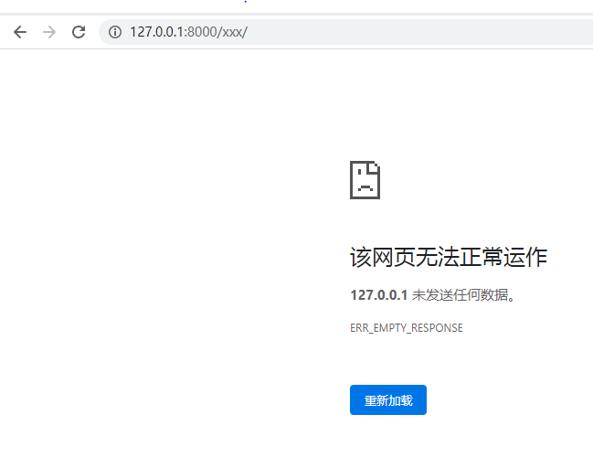
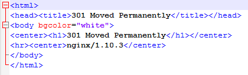
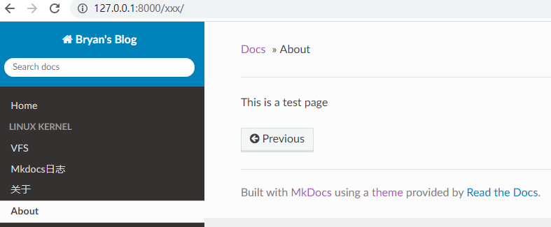

记录使用mkdocs的过程
mkdocs相关命令
For full documentation visit mkdocs.org.
Commands
mkdocs new [dir-name]- Create a new project.mkdocs serve- Start the live-reloading docs server.mkdocs build- Build the documentation site.mkdocs -h- Print help message and exit.
Project layout
mkdocs.yml # The configuration file.
docs/
index.md # The documentation homepage.
... # Other markdown pages, images and other files.
相关问题记录：
添加第二个about.md页面失败
按照 [https://www.mkdocs.org/?#mkdocs] 文档中的添加第二个页面的方法，使用curl下载about.md文档后，点击about图标，会出现如下错误页面：

原因猜测是因为about.md中包含了html的相关语法，如下：

将about.md中的内容全部删除，修改成为“This is a test page”之后，页面就加载出来了。

md中插入图片后页面无法显示
在md中插入图片，md本地编辑器typora显示无问题，但是mkdocs无法显示，原因是直接在typora中插入截图，引用的是本机C盘的临时目录，在mkdocs中无法显示，参考帮助文档：[https://markdown-docs-zh.readthedocs.io/zh_CN/latest/user-guide/writing-your-docs/#_5]
帮助文档链接
更多帮助文档可以参考 [https://www.mkdocs.org/?#mkdocs] 中文文档可以参考 [https://markdown-docs-zh.readthedocs.io/zh_CN/latest/],但是这个文档有点旧，最典型的比如mkdocs.yml文档中配置多个页面的帮助，其实是使用nav，但是文档中还是使用page，这个坑是我踩过之后重新上网查找才发现的